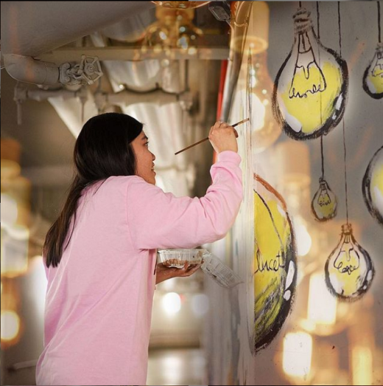
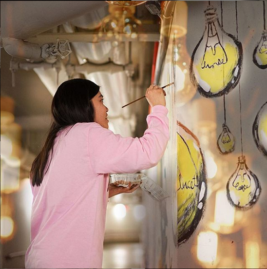

I had been interested in Borderline, a student organization responsible for the AR-animated murals in the tunnels under MIT, ever since seeing a Borderline AR demo at Campus Preview Weekend. During freshman fall, I applied to paint and animate a mural with Borderline. The design was based on a piece I did in high school (below) and the idea that people are like lightbulbs: they burn bright with ideas and shine on each other.
Before working on Incandescent, I had never painted a mural nor done animation, but Borderline provided me with the supplies and training I needed. The mural took about a week to complete, and if I’m being honest, it turned out pretty different from what I had envisioned. I have mixed feelings towards Incandescent now, but I am satisfied with how the AR animation turned out. I’m grateful to Borderline for this opportunity to share my art, and I have since joined the Borderline exec team to help continue the tunnel and other Borderline projects.


 
